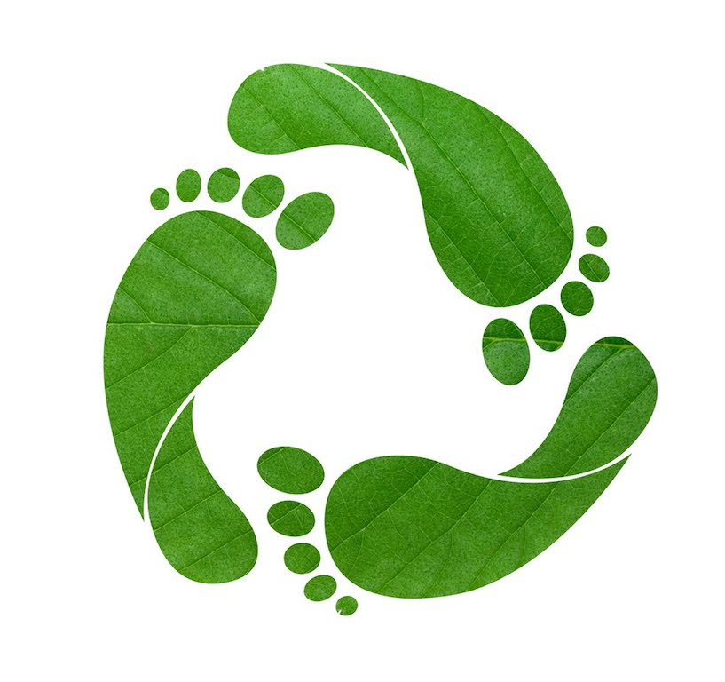
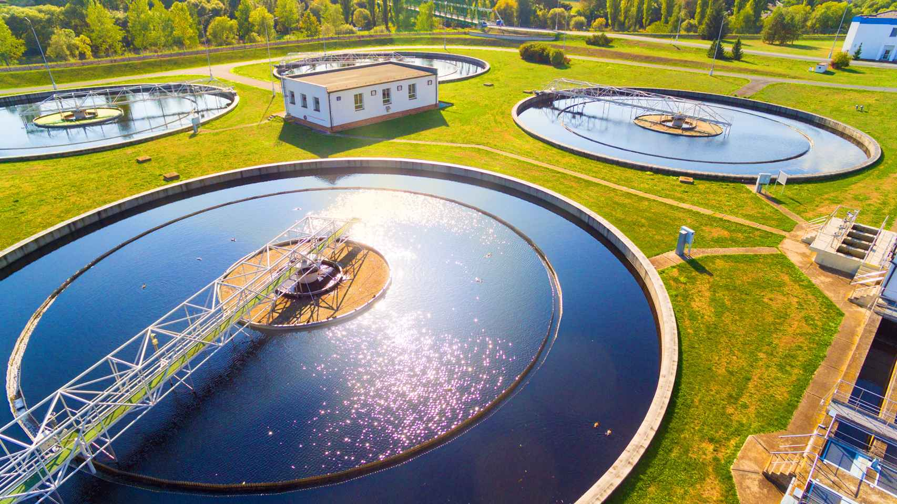
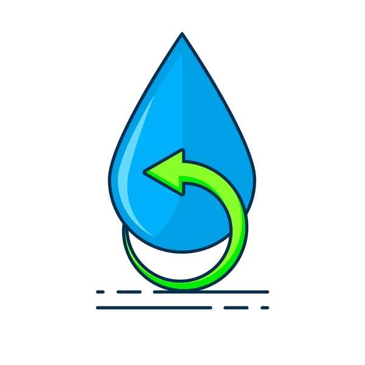
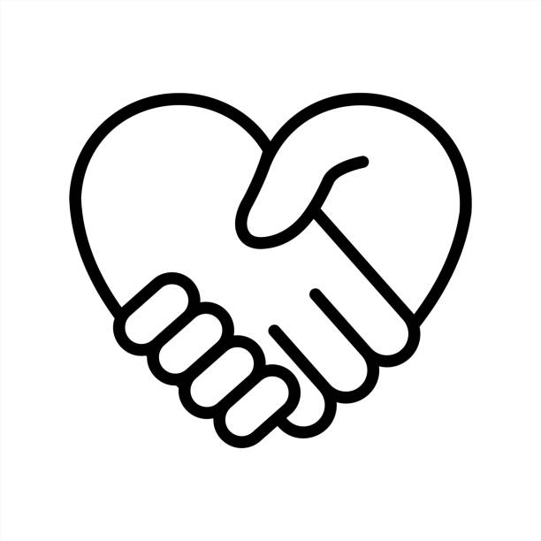

Necesidad
Reducir la huella de carbono
- Existe un gran problema sobre el consumo excesivo de agua para el mantenimiento de las IAs
- Este problema afecta a todas las personas, independientemente de si son consumidores de la IA o no
- La importancia es total, dependiendo tanto para el estilo de vida como la calidad de vida que tendrá la sociedad en el futuro

Aproximación a la solución
Aprovechar un problema real
- Aprovechar las aguas residuales depuradas transformandondo un problema en una fuente sostenible de agua
- Minimizar el desperdicio de agua y ayudar a preservar las fuentes naturales cada vez más escasas
- Incentivar el desarrollo de tecnologías avanzadas, abriendo puertas a soluciones innovadoras

Beneficios
Ganar por ambas partes
- En lugar de usar agua tratada de alta calidad para enfriar servidores, pueden usar agua reciclada.Esto reduce costes y presión sobre las redes públicas de suministro.
- Menos vertidos de aguas negras y grises a la red de alcantarillado o al entorno, eso quiere decir, que disminuye el uso de agua limpia para tareas no esenciales.
- Aunque la instalación del sistema de reciclaje tiene un coste inicial, se ahorra mucho en el consumo a lo largo del tiempo.

Colaboración
Gran número de asociaciones
- 4.1 Alianzas con universidades para investigar tecnologías verdes aplicadas a la IA.
- 4.2 Convenios con ONGs medioambientales para promover prácticas sostenibles.
- 4.3 Participación conjunta con gobiernos para establecer regulaciones ecológicas en el desarrollo tecnológico.

Gancho
Ganamos todos
- Construyamos juntos un futuro sostenible: optimicemos la IA para reducir su huella de carbono, aprovechando la eficiencia energética, las energías renovables y un diseño consciente.
- "Impulsando el desarrollo, juntos." Este mensaje refleja nuestro enfoque colaborativo para ayudar a los desarrolladores a construir el futuro con herramientas eficientes, inteligentes y accesibles.
